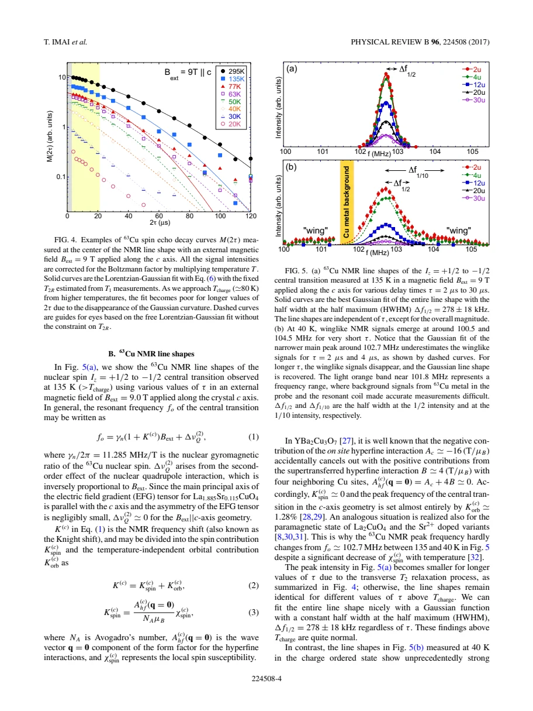
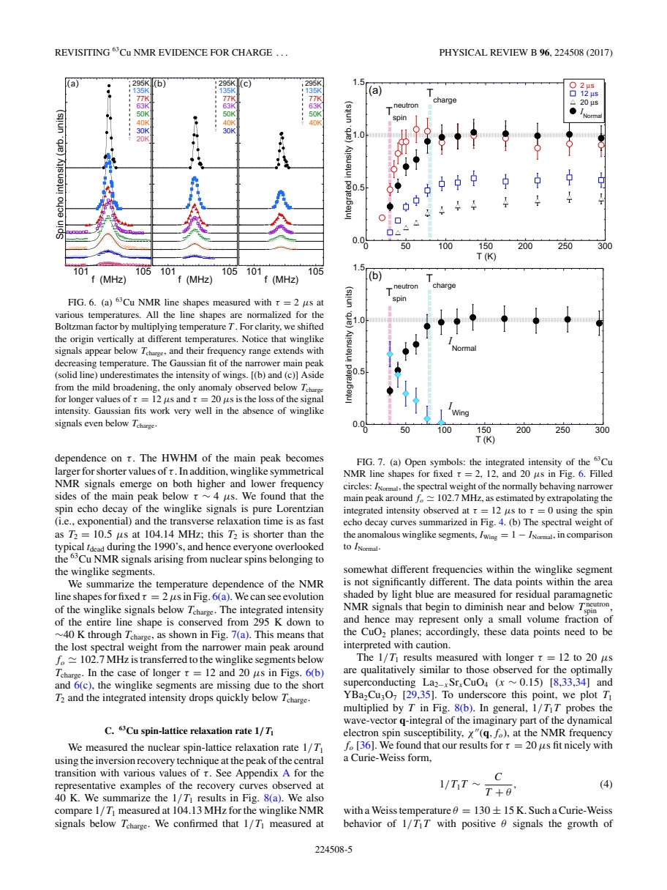
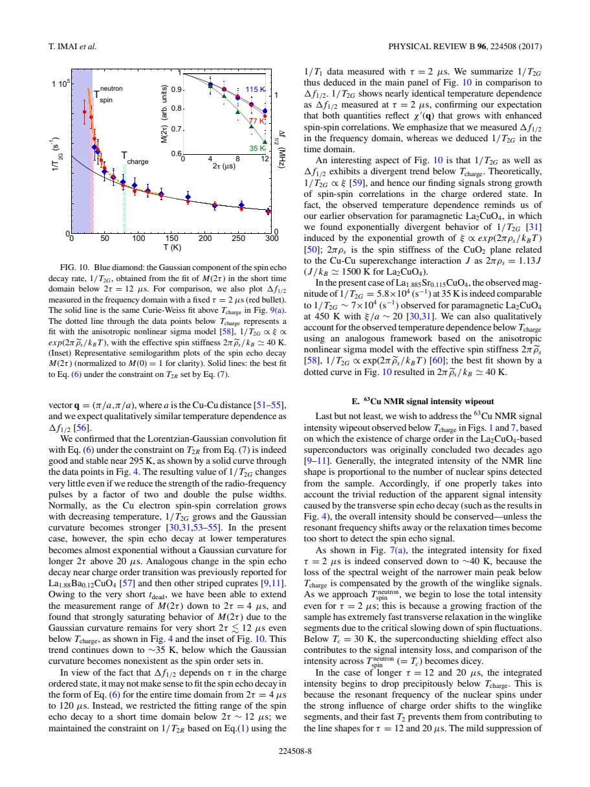

experiment · Imai · supplied source 2017
Revisiting 63Cu NMR evidence for charge order in superconducting La1.885Sr0.115CuO4
Very short-delay Cu NMR recovers broad, rapidly relaxing spectral weight below the independently established charge-order onset in x = 0.115 LSCO.
The question: Why did older Cu NQR measurements miss the true onset of charge-influenced domains?
Before you start: the few terms you need
- LSCO: layered La2-xSrxCuO4; nominal x is Sr per formula unit
- Local probe: a distribution can matter even when the bulk average barely changes
See → explain → test
Understand it in four pictures.
Picture 1 / 4
Change the exposure time
Look for: The same crystal is observed with shorter and longer echo delays.
Swipe across the picture to read every label, or enlarge it below.
- Short pulse delay
- Recover fast echoes
- Compare long-delay survivors
Teaching schematic. This is measurement logic, not a simulated pulse waveform.
A long delay selects slow-decaying nuclei and can hide the most affected domains.
Picture 2 / 4
Find the broad wings
Look for: At 40 K, very short delays reveal signal on both sides of the narrow main line.
Swipe across the picture to read every label, or enlarge it below.
- τ = 2–4 μs
- τ = 12–20 μs
Teaching schematic. Two populations are described from the source spectra; no measured profile is reconstructed.
A Gaussian fit to the surviving main peak misses a second broad, fast component.
Picture 3 / 4
Account for signal weight
Look for: Corrected total weight is conserved through charge onset when the fast wings are captured.
Swipe across the picture to read every label, or enlarge it below.
Teaching schematic. Conservation is observed from 295 K to approximately 40 K; superconducting shielding complicates lower temperatures.
Lost normal-peak weight is redistributed into charge-influenced signal, not a charge amplitude.
Check the original: PDF p. 5
Picture 4 / 4
Revise the old onset
Look for: Independent x-ray onset near 80 K agrees with fast-echo anomalies.
Swipe across the picture to read every label, or enlarge it below.
- Short-delay NMR anomaly
- Known x-ray onset ≈80 K
- Earlier onset underestimated
Teaching schematic. Nominal x = 0.115 and this sample are essential; low-doping wipeout can instead track localization.
The old approximately 50 K wipeout onset reflected measurement selection.
Predict before revealing
What should happen when the pulse delay is shortened in a sample containing fast-decaying broad wings?
Choose an answer, then compare the reasoning.
Shortening the delay changes which echoes survive. It reveals a previously hidden population without changing the underlying transition.
Read the answer
The broad population becomes easier to detect Shortening the delay changes which echoes survive. It reveals a previously hidden population without changing the underlying transition.
Go deeper Follow the full argument
A controlled revisit of the earlier interpretation
Imai and colleagues reexamine Cu NMR in a single crystal of La1.885Sr0.115CuO4 with Tc about 30 K. Charge ordering was independently found near 80 K by x-ray work on the same growth batch. Earlier Cu NQR studies had assigned approximately 50 K onset. The source identifies a concrete reason: broad, rapidly decaying echoes below charge onset were lost to experimental dead time or an inappropriate early-time Gaussian extrapolation. The new experiment uses an external field of 9 T along c and pulse separations down to 2 microseconds. The 180-degree pulse lasts about 5 microseconds, so the finite-pulse correction and approximately 2.5 microsecond receiver dead time matter when discussing actual access to fast signals.
A nearly fixed mean can hide a changing distribution
For field along c, second-order quadrupolar shifts are very small and on-site and transferred uniform spin hyperfine fields nearly cancel. The central frequency therefore changes little even though magnetism changes locally. At 135 K the spectra at different delays have nearly identical Gaussian shape, with half width about 278 ± 18 kHz, differing mainly in overall decay. At 40 K, delays of 2 to 4 microseconds reveal broad wings near 100.5 and 104.5 MHz around the approximately 102.7 MHz main peak. The wings vanish for longer delays and can have T2 near 10.5 microseconds. A fit to only the narrow main peak systematically misses their weight. This is direct evidence of a distribution of local response and decay times.
What the intensity fractions mean
After Boltzmann correction, the integrated short-delay spectrum conserves total weight from 295 K to about 40 K across charge onset. The missing narrow-peak weight moves into the broad wings. The authors estimate the normally behaving fraction by extrapolating the longer-delay main component to zero delay, then define IWing = 1 − INormal. These fractions characterize spectral populations, interpreted as differently influenced regions, rather than the size of the electronic charge modulation. Below and near Tc, radio-frequency shielding and further spin slowing remove accessibility, so the lower-temperature fraction comparison needs caution. The main-peak fraction is still about one-third near 30 K, while other probes identify a smaller static magnetic fraction. The experiment does not establish simple macroscopic phase separation.
Relaxation, linewidth and the echo model
Wing nuclei relax longitudinally about five times faster than main-peak survivors. Longer-delay measurements therefore preferentially record the less affected regions, whose 1/(T1T) retains a Curie-Weiss form with θ about 130 ± 15 K. Short-delay measurements show the extra fast response. Above charge onset the echo is described by a relaxation-induced exponential times a Gaussian indirect-coupling term. Below onset the full-time fit fails because the fast component alters early decay; only an appropriately short interval can be analyzed consistently. Field-dependent linewidth proportional to field favors a magnetic distribution over a dominant second-order quadrupolar spread, which would scale inversely with field. Increased low-frequency magnetism need not imply a large resolved NQR frequency modulation.
What changes in the scientific interpretation
The revised onset agrees with charge order near 80 K; earlier recovery procedures discarded the most affected nuclei. At dopings below approximately 0.10, the paper warns that wipeout onset can instead reflect localization, so the old extrapolation of stripe onset across the entire underdoped range is unsafe. The spin system slows gradually: neutrons detect apparently static order near 30 K on a much faster time window, and muons see freezing at lower temperatures. Those differences are compatible with heterogeneous glassy dynamics. The source fits an effective low-energy correlation scale around 40 K in the charge-influenced response, far below the parent exchange scale, but it is not a microscopic exchange J or a universally valid asymptotic fit. Appendices verify recovery forms and compare field orientations. The secure inference is heterogeneous redistribution of Cu NMR response, with a quantitatively demonstrated visibility bias.
How to compare the evidence
A useful thought experiment is to repeat the identical frequency sweep with a longer echo delay. The fast-decaying wing nuclei now contribute much less, so the spectrum appears narrower and its integrated intensity falls even if the shortest-delay experiment still finds the full corrected weight. This is a measurement-window effect, not the removal of Cu atoms. Extrapolating the surviving narrow component back toward zero delay defines INormal, while the remaining corrected weight defines IWing. These weights describe differently relaxing environments and require intensity normalization; they do not directly measure the sinusoidal charge-density amplitude. The source ties the new wings to independently established charge ordering in the same specimen, which is stronger evidence than applying a universal wipeout rule to every low-doping sample.
PDF p. 4 · PDF p. 5 · PDF p. 6 · PDF p. 7 · PDF p. 8 · PDF p. 9 · PDF p. 10 · PDF p. 11 · PDF p. 12
Translate the mathematics Key equations and symbol meanings
M(2τ) = M0 exp[−2τ/T2R] exp[−(2τ/T2G)²/2]
Symbols: τ: pulse separation; M0: extrapolated echo; T2R: exponential relaxation contribution; T2G: Gaussian indirect-coupling time.
A useful normal-state echo model; fitting it indiscriminately at long times below charge onset misses fast components.
IWing = 1 − INormal
Symbols: INormal: extrapolated narrow-component weight relative to the high-temperature total; IWing: complementary anomalous weight.
This partitions signal weight; it does not calibrate charge modulation amplitude.
1/(T1T) = C/(T + θ)
Symbols: C: fitted scale; θ ≈ 130 K: Weiss scale of the longer-delay surviving main component.
The apparently ordinary long-delay rate can coexist with much faster relaxation in hidden wings.
Read the evidence A guided look at the original figures

Open the full original page ↗

Open the full original page ↗

Open the full original page ↗
What this paper does—and does not—establish
- Supplied main article and appendices were read; cited external experiments were not independently remeasured.
- Spectral-weight conservation is bounded by the stated temperature window and detection corrections.
- Charge-influenced local response is heterogeneous; simple spatial phase separation is not uniquely established.
Explain it back.
Try answering aloud before opening the explanation.
Why is nearly unchanged Knight shift compatible with broad wings?
The uniform c-axis spin hyperfine field nearly cancels, while a heterogeneous local field distribution can broaden the line.
Is IWing the amplitude of charge order?
No. It is complementary spectral weight assigned to the more strongly charge-influenced response.
Why can a long-delay T1 look normal?
The delay selects the slowly decaying, less strongly affected nuclei.
Connect the next paper.
Source version, reading coverage and preservation
Complete supplied substantive text read; selected main figure and equation pages rendered and visually checked
Reviewed body pages: 1, 2, 3, 4, 5, 6, 7, 8, 9, 10, 11, 12. References checked as a bibliography but cited works were not independently re-read.
Original file retained byte for byte. SHA-256: ad098ad6be180784fb0491c9745036aa376f98af1525b7c5f36f8c0dc3f41933
Filename: PRB - Imai - Cu NMR evidence for charge order in LSCO0.115 - 2017.pdf.